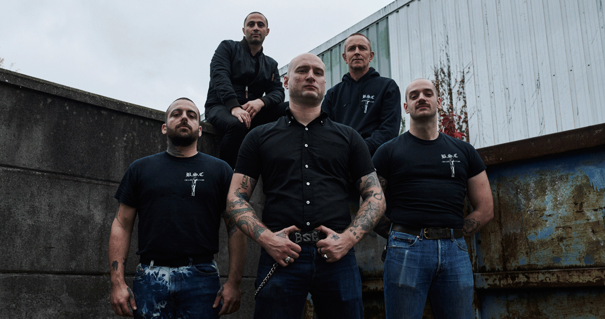
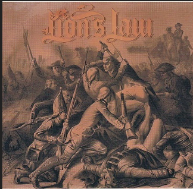
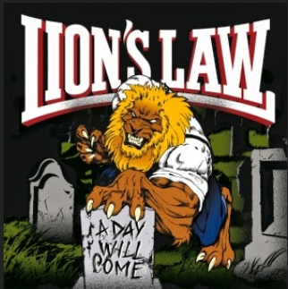
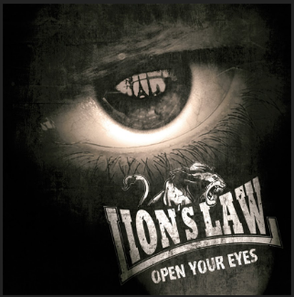

Lions Law
Lion's Law es una banda Oi! creada en 2012 en París, Francia. La banda está formada por ex miembros de Komintern Sect, StreetKids, Maraboots y Burning Heads. Su formación es la siguiente: Wattie (Voz), Louis (Guitarra), Daick (Guitarra), Swan (Bajo) y Thomoi (Batería).
Discografía
2013 - F.A.V.L. - Lion's Law - Ant Viam Inbeniam Ant Faciam

01 - Watch'Em Die
02 - Tell The Boys
03 - City Streets
2013 - Lafayette Ep

01 - Lafayette
02 - I Don't Give A Damn
1985 - Live And Loud! (Reedición 2002)

01 - Antisocial
02 - It's A Shame
03 - Every Night
04 - Lafayette
05 - For My Clan (Feat. Stomper 98)
06 - On The Terraces
07 - I Don't Give A Damn
08 - One By One
09 - Hard Way
10 - Medias
11 - 1789 (Feat. Komintern Sect)
12 - A Day Will Come
13 - Tell The Boys (Bonus Ep)
14 - Watch'Em Die (Bonus Ep)
15 - City Streets (Bonus Ep)
2015 - Open Your Eyes

01 - Intro
02 - Knock'em Out
03 - Rollin'
04 - Skinhead
05 - In Your Veins
06 - Out Of My Way
07 - Laced Up
08 - Open Your Eyes